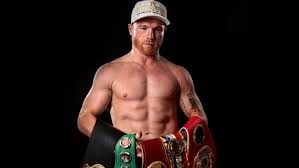

¿Qué tipo de deportes me gustan?
Mis deportes favoritos son los de contacto, es decir, en los que el contacto físico es parte del deporte, es permitido. Aunque incluye deportes muy variados, yo prefiero las artes marciales.
Un deporte de combate es un deporte competitivo de contacto donde dos contrincantes luchan uno contra el otro usando ciertas reglas de contacto según la modalidad. El objetivo es ganar la competición usando partes del cuerpo que estén permitidas por las reglas de cada deporte.
Mi deporte favorito es el taekwondo, practiqué desde los 10 años hasta que me lesioné la rodilla, soy cinta negra,fui a muchísimas competencias estatales, regionales y también nacionales, en los que gané en 2018 una medalla de plata en Bahía Banderas, Nayarit. Me gusta mucho ver las peleas o videos de este deporte y disfruto mucho recordar el ambiente que había entre mis compañeros de solidaridad, apoyo, diversión y unión por el mismo deporte.
Mi taekwondoína favorita es María del Rosario Espinoza
¿Qué otros deportes me gustan?
Me gusta mucho ver peleas de MMA, de box, de kickboxing y hasta de karate. Practiqué karate cuando era muy pequeña por aproximadamente un año y también fui a box por un par de meses.
Disfruto mucho ver la pasión que tiene cada atleta con su deporte y lo mucho que se esfuerzan por lograr sus metas, ya que todo eso se refleja en sus peleas, con todas sus habilidades y lo ágiles que han llegado a ser.

Mi peleador favorito de MMA es Ronaldo Rodríguez "Lazy boy".
Mi boxeador favorito es Saúl Álvarez "Canelo".
Cumpleaños
07 de julio de 2004
¿Dónde nací?
Xalapa, Ver.

¿Qué estudio?
Administración de Negocios Internacionales
¿Dónde estudio?
Universidad Veracruzana